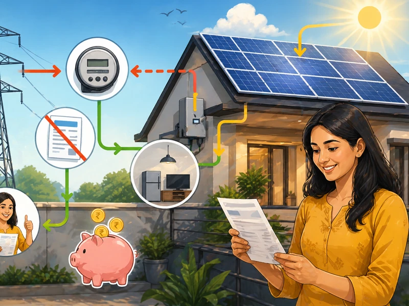

परिचय
घरावर ऑन-ग्रीड रूफटॉप सोलर बसवल्यानंतर महावितरणकडून (MSEDCL) येणारे नेहमीचे वीज बिल पूर्णपणे बदलते. पारंपरिक एकतर्फी मीटरऐवजी **'बायडायरेक्शनल नेट मीटर' (Net Meter)** बसवला जातो. यामुळे तुम्ही महावितरणकडून किती वीज वापरली (Import) आणि तुमच्या सोलरने किती वीज ग्रीडला दिली (Export), याचा हिशोब मांडून अंतिम बिल तयार केले जाते. हे बिल कसे वाचायचे आणि त्यातील आकडेमोड कशी समजून घ्यायची, ते आपण या लेखात पाहू.
१. नेट मीटरिंग (Net Metering) संकल्पना कशी काम करते?
Key Takeaways
- नेट मीटरिंगमध्ये वापरलेली वीज (Import) व ग्रीडला दिलेली वीज (Export) यांमधील निव्वळ फरकावरच बिल आकारले जाते.
सोलर सिस्टीम जोडल्यानंतर नेहमीचे मीटर काढून दोन-मार्गी (Bi-directional) नेट मीटर बसवला जातो. यामध्ये ३ मुख्य रिडिंग्स नोंदीत होतात:
- Import (आयत): रात्री किंवा ढगाळ वातावरणात तुम्ही महावितरणच्या ग्रीडकडून घेतलेली वीज.
- Export (निर्यात): दिवसा सोलरद्वारे तयार झालेली व घरात न वापरता महावितरणकडे पाठवलेली अतिरिक्त वीज.
- Net Generation (निव्वळ जोडणी): Import मधून Export वजा केल्यावर उरणारे युनिट्स.
दिवसा सोलरने बनवलेली अतिरिक्त वीज महावितरणच्या ग्रीडमध्ये जमा होते का?
२. महावितरणच्या नवीन सोलर बिलाची आकडेमोड कशी होते?
Key Takeaways
- जर तुमचे Export युनिट्स Import पेक्षा जास्त असतील, तर वीज वापर शुल्क (Energy Charges) शून्य रुपये येते.
एका उदाहरणाद्वारे नेट मीटरिंग बिलिंग समजून घेऊया:
| तपशील (Parameter) | युनिट्स (Units) | परिणाम / बिल आकारणी |
|---|---|---|
| महावितरणकडून वापर (Import) | ३०० युनिट्स | वापरलेली एकूण वीज |
| ग्रीडला दिलेली वीज (Export) | ३५० युनिट्स | सोलरद्वारे जमा वीज |
| निव्वळ वापर (Net Billable Units) | ० युनिट्स | वीज आकार (Energy Charges) = ₹ ० |
| शिल्लक क्रेडिट (Banked Units) | + ५० युनिट्स | पुढील महिन्याच्या बिलात कॅरी फॉरवर्ड होणार |
टीप: वीज आकार शून्य झाला, तरी स्थिर आकार (Fixed Demand Charges) आणि टॅक्स/शुल्क नियम लागू राहतात.
जर निर्मिती वापरापेक्षा जास्त असेल तर ते युनिट्स पुढील महिन्यात जमा (Carry Forward) होतात का?
३. बिल शून्यावर आले तरी कोणते किमान चार्जेस भरावे लागतात?
Key Takeaways
- नेट युनिट्स शून्य असले तरी निश्चित स्थिर आकार (Fixed Charges) भरावाच लागतो.
अनेक ग्राहकांना वाटते की सोलर बसवल्यावर बिल ₹० येईल. परंतु, महावितरणच्या नियमांनुसार खालील स्थिर आकार भरावे लागतात:
- स्थिर आकार (Fixed / Demand Charges): मीटर कनेक्शनानुसार (उदा. १-फेज किंवा ३-फेज) दरमहा ठराविक फिक्स चार्ज लागू होतो.
- मीटर भाडे (Meter Rent): जर महावितरणने स्वतःचे नेट मीटर बसवले असेल तर त्याचे मासिक भाडे लागते.
- वीज शुल्क व कर (Electricity Duty & Tax): फक्त नेट बिलिंग युनिट्सवर किंवा नियमानुसार लागणारे किमान कर.
सोलर बसवल्यावरही येणारे ₹१५० ते ₹३०० रुपयांचे बिल हे फिक्स चार्जेसमुळेच असते का?
४. वर्षाच्या शेवटी शिल्लक युनिट्सचे काय होते? (Settlement Period)
Key Takeaways
- दरवर्षी मार्च महिन्यात महावितरण शिल्लक क्रेडिट युनिट्सचे आर्थिक समायोजन (Settlement) करते.
महावितरणच्या नियमांनुसार दरवर्षी **१ एप्रिल ते ३१ मार्च** हा सेटलमेंट काळ असतो:
४.१ युनिट्स क्रेडिट होणे
उन्हाळ्यात तयार झालेले अतिरिक्त युनिट्स पावसाळ्यात किंवा हिवाळ्यात वापरण्यासाठी आपोआप ॲडजस्ट केले जातात.
४.२ मार्चमधील अंतिम पैसे मिळणे (PPA Rate)
३१ मार्च रोजीही जर तुमच्या खात्यात अतिरिक्त युनिट्स शिल्लक राहिल्यास, महावितरण नियामक आयोगाने ठरवलेल्या दराने (APPC Rate) त्या युनिट्सचे पैसे तुमच्या पुढील बिलात जमा करते किंवा खात्यात पाठवते.
वार्षिक सेटलमेंटमध्ये शिल्लक युनिट्सचे पैसे महावितरणकडून खात्यात जमा होतात का?
महत्त्वाचे निष्कर्ष
सोलर बसवल्यावर बिलात Import व Export अशा दोन्ही युनिट्सची नोंद असणारा नेट मीटरिंग तक्ता समाविष्ट होतो.
वीज वापर शून्यावर आला तरी फिक्स चार्जेस व मीटर भाडे यांसारखे स्थिर शुल्क भरावे लागते.
वर्षाच्या शेवटी मार्च महिन्यात शिल्लक युनिट्सची महावितरणकडून आर्थिक भरपाई दिली जाते.
पुढचं पाऊल:
सोलर बसवल्यानंतर येणाऱ्या पहिल्या २-३ महिन्यांच्या बिलांवरील Import आणि Export रिडिंग्सची स्वतः पडताळणी करा. जर बिलात नेट मीटरिंग लागू झाले नसेल, तर लगेच महावितरणच्या स्थानिक कार्यालयात अर्ज सादर करा.
People Also Ask
नेट मीटर बसवून महावितरणच्या सिस्टीममध्ये ऑन-ग्रीड मॅपिंग पूर्ण झाल्यानंतरच्या पहिल्याच बिलिंग सायकलपासून वीज बिल कमी होते.
नेट मीटरच्या डिस्प्लेवर दर काही सेकंदांनी 'Import (KWh)', 'Export (KWh)' आणि 'Net' असे वेगवेगळे स्क्रीन ब्लिंक होतात. या नोंदी इनव्हर्टरच्या जनरेशन रिडिंगशी जुळतात.
३१ मार्च रोजी शिल्लक राहिलेल्या युनिट्ससाठी MERC द्वारे ठरवून दिलेल्या सरासरी औष्णिक वीज खरेदी दराने (APPC Rate - साधारण ₹३ ते ₹३.५० प्रति युनिट) क्रेडिट दिले जाते.